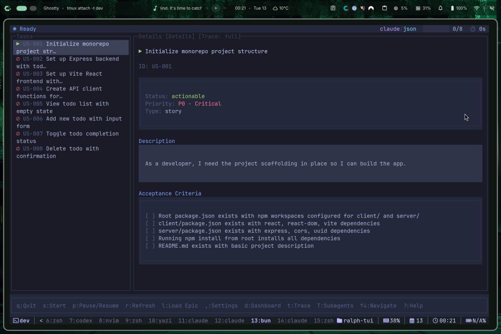
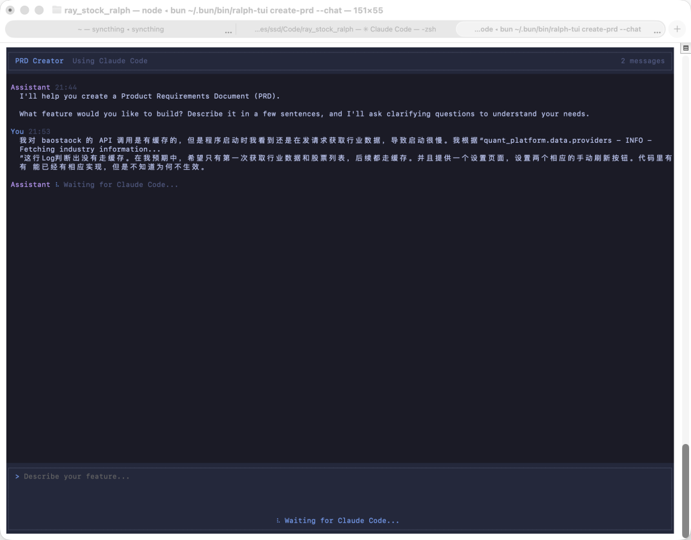
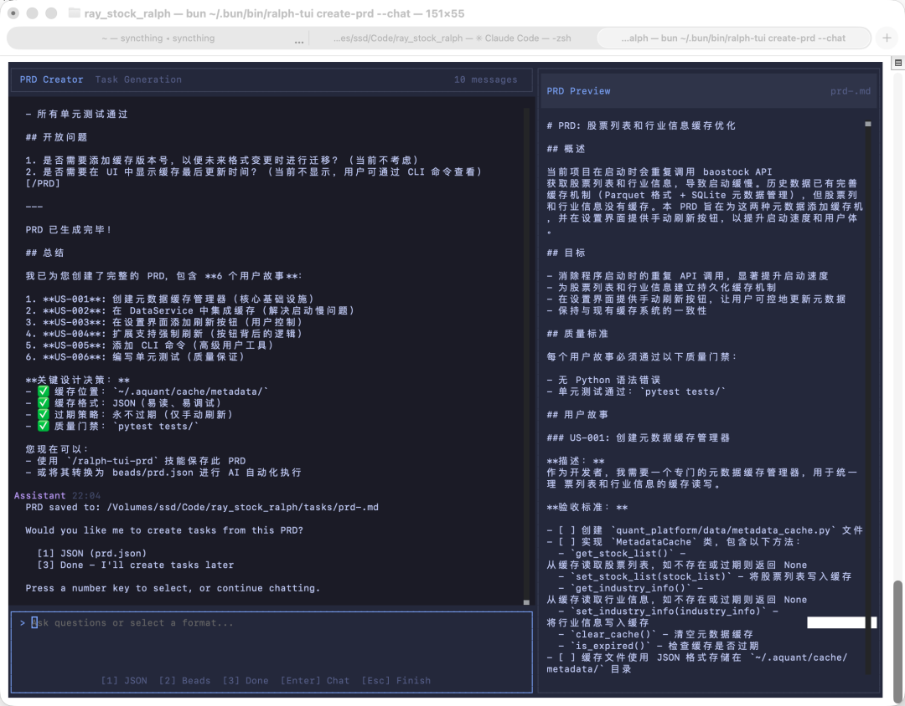
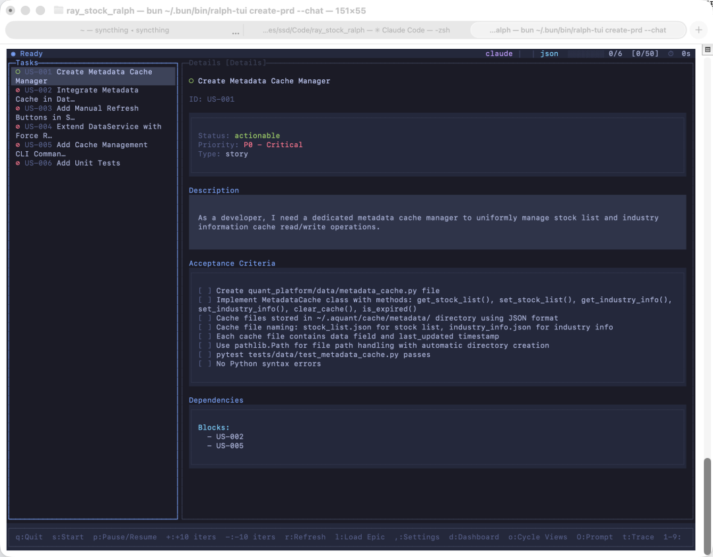
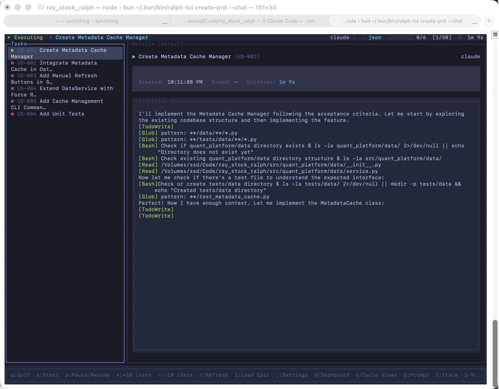

第一篇中，我们介绍了一种 Ralph 实现，并成功自动开发出程序。本篇介绍一种新的实现，特点是带 TUI 界面，用户观感更好一些。至于效果如何，见本篇的自动化 Vibe Coding 实战。
ralph-tui
这个项目叫 ralph-tui，1.3k stars，为热门的 Ralph Loop 添加了 TUI 界面。
Repo 地址：https://github.com/subsy/ralph-tui
界面如下，比第一篇的单薄脚本漂亮多了：

这个命令使用 bun 进行安装：bun install -g ralph-tui
如果 macOS 没有 bun，安装 bun 的方法：curl -fsSL https://bun.sh/install | bash
删除 snarktank/ralph
注意：如果实战过第一篇的用户，我建议先把 snarktank/ralph 的 skills 删掉，别跟 ralph-tui 打架。
如果你没装过 snarktank/ralph，跳过这一节。
删除 snarktank/ralph 全局 skills：
rm -rf ~/.claude/skills/prd
rm -rf ~/.claude/skills/ralph打开 Clude Code /skills验证一下是不是没了
进入开启 snarktank/ralph 的项目，删除：
• ralph/ • scripts/ralph/ • tasks/
快速开始
运行如下命令：
# Setup your project
cd your-project
ralph-tui setup
# Create a PRD with AI assistance
ralph-tui create-prd --chat
# Run Ralph!
ralph-tui run --prd ./prd.json其中：
运行 setup 时，会问我问题，使用什么方法跟踪问题（JSON 还是 Beads），我选择 JSON（第一次了解 Beads，感觉是个好东西）。又问我 Agent 工具是什么，自己监测到 Claude Code，也支持别的。又问我 ralph loop 最大迭代次数多少。又问我任务完成要不要自动提交。又问我要不要安装 skills，肯定是要安装。
运行 create-prd 后：会出现一个漂亮的 TUI 界面让我输入需求。我输入了一个：我对 baostaock 的 API 调用是有缓存的，但是程序启动时我看到还是在发请求获取行业数据，导致启动很慢。我根据“quant_platform.data.providers - INFO - Fetching industry information...”这行Log判断出没有走缓存。在我预期中，希望只有第一次获取行业数据和股票列表，后续都走缓存。并且提供一个设置页面，设置两个相应的手动刷新按钮。代码里有可能已经有相应实现，但是不知道为何不生效。
创建 PRD
create-prd 一步的截图如下：

这一步等的时间还是比较长的，1～2 分钟，然后会提问我问题，进行选择题，跟第一篇一样。
但是由于 Prompt 不同，表现跟 snarktank/ralph 也是不同的。比如 ralph-tui 会问我更多的问题。
接下来进入一个 PRD 预览页面：

输入 1 来创建 prd.json。
全自动编程
之后输入3自动进入干活界面（得再按 s 才启动）：

这个比 snarktank/ralph 好的地方在于，干活的过程中能看到日志，不像 snarktank/ralph 启动后就看不到了，导致假死了也发现不了。

这个功能对我来说是最需要的，能看到 AI 一直在干活的状态才能让我感到安心。
小结
至于跟 snarktank/ralph 比哪个效果好，我没进行严谨地测评，给不出来。
不过我会选择本篇的 ralph-tui，原因是界面美观，最重要的是能看到 ralph loop 中 Claude Code 的执行过程。